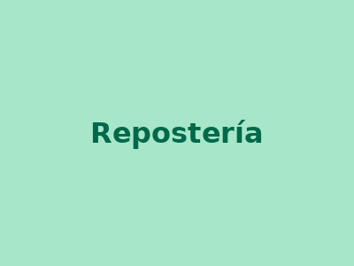

Nuestra historia
Pastelería 1000 Sabores celebra su 50° aniversario como un referente en la repostería chilena. En 1995 colaboramos en la creación de la torta más grande del mundo, un hito que reconoce nuestra pasión por la repostería a gran escala. Hoy renovamos nuestra tienda online para ofrecer una experiencia de compra moderna y accesible para todos nuestros clientes.
Misión
Ofrecer una experiencia dulce y memorable a nuestros clientes, proporcionando tortas y productos de repostería de alta calidad para todas las ocasiones, mientras celebramos nuestras raíces históricas y fomentamos la creatividad en la repostería.
Visión
Convertirnos en la tienda online líder de productos de repostería en Chile, conocida por nuestra innovación, calidad y el impacto positivo en la comunidad, especialmente en la formación de nuevos talentos en gastronomía.
Nuestro equipo de desarrollo

Repostería
Maestros pasteleros con más de 50 años de tradición.
Comunidad Duoc
Impulsamos la formación de nuevos talentos en gastronomía.
Equipo Web
Estudiantes desarrollando esta tienda online como proyecto académico.